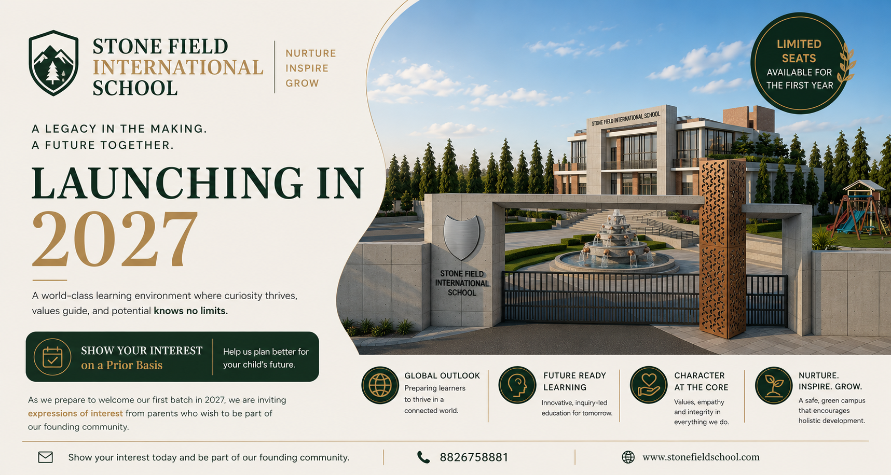
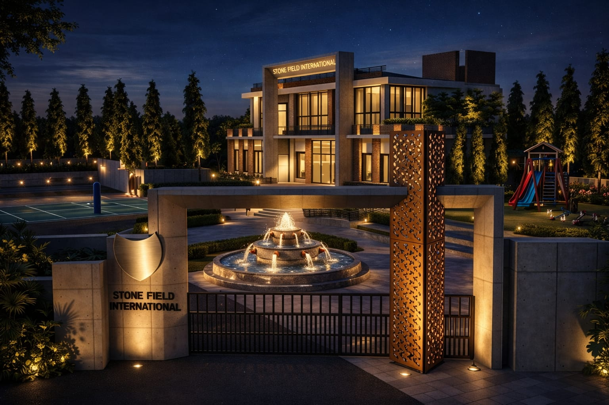
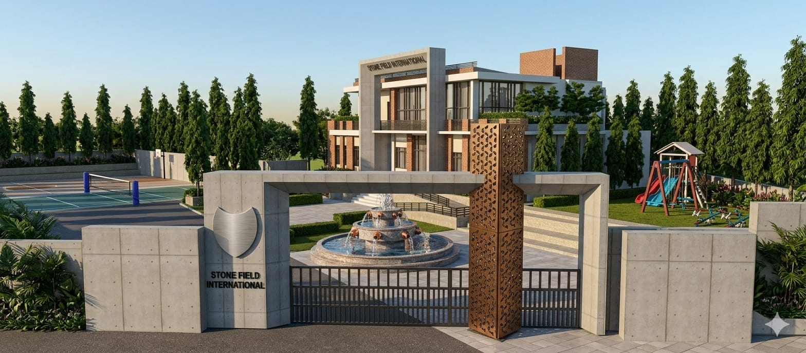
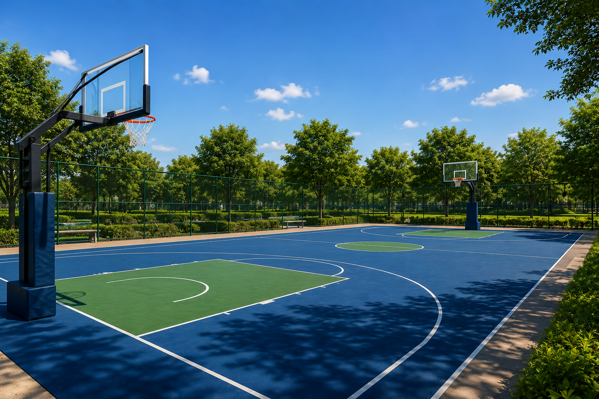
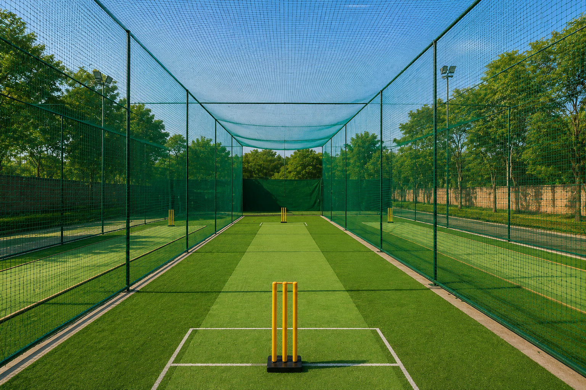
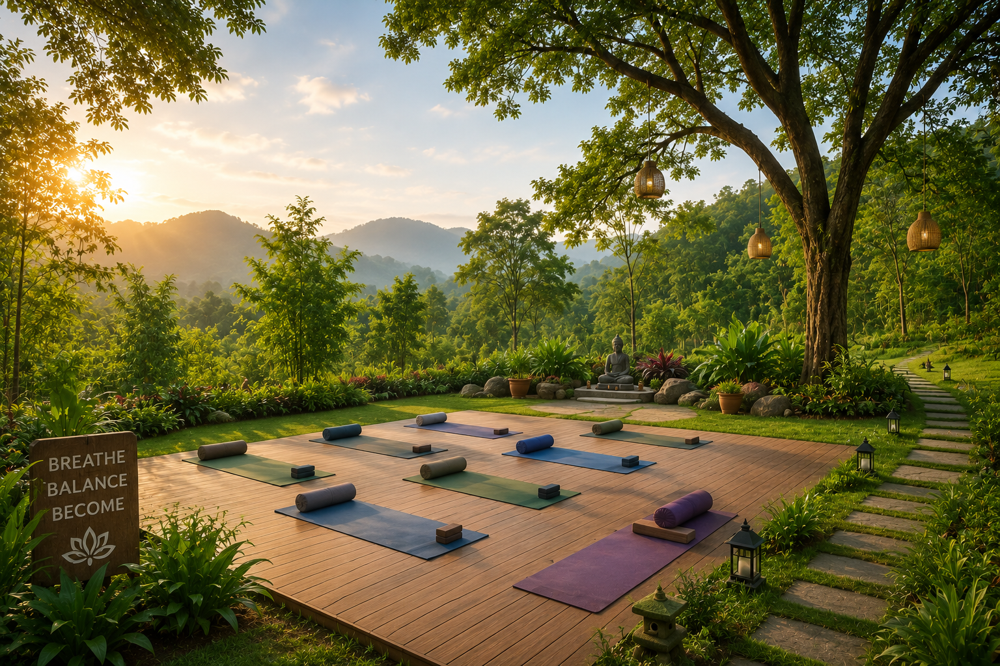
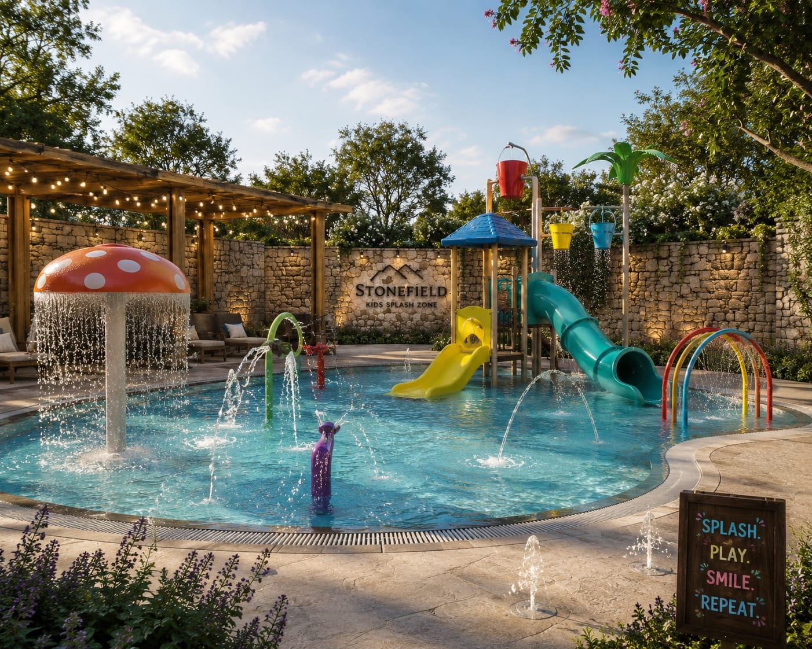
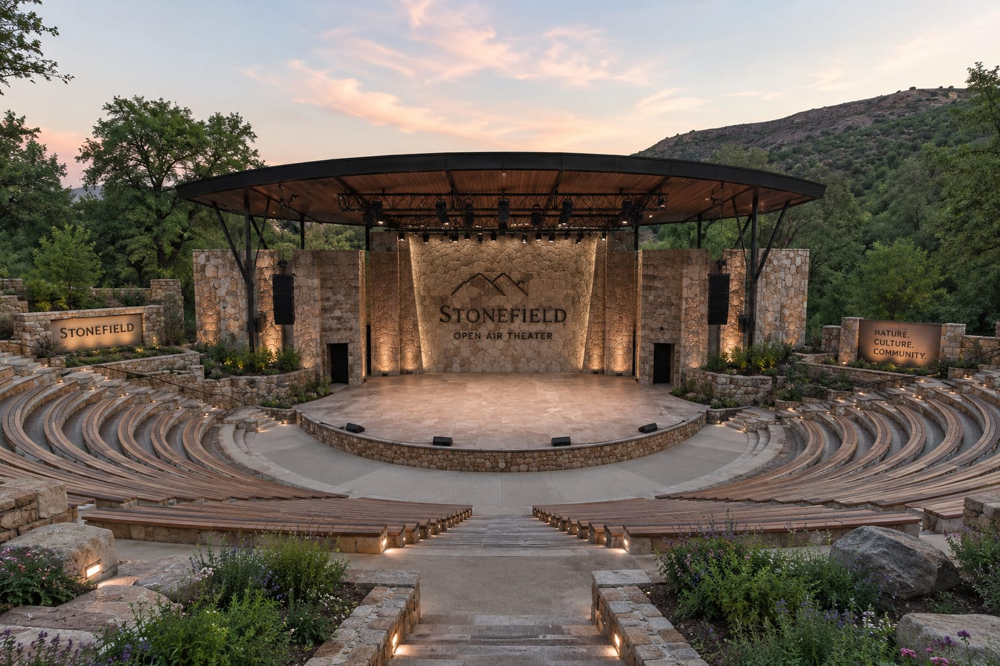
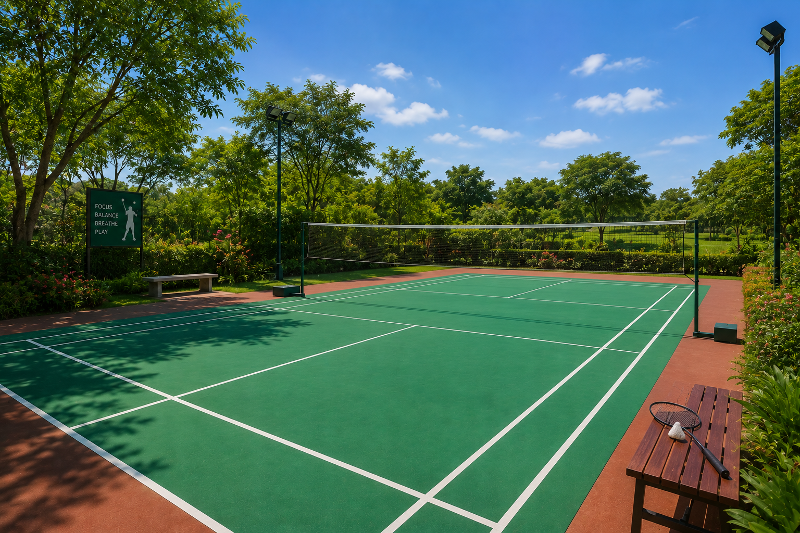

Discover
A curious child explores books, science models, nature, and the joy of asking questions.


First international school of the area
A high-tech, globally inspired campus in Rehan where academics, robotics, sports, wellness, and confident personality development grow together.
The Stone Field Way
A clear journey for every learner: vision, learning, spaces, sports, admissions, and confident growth.
SFIS Overview
A short visual overview of the SFIS environment, facilities, and future-ready learning experience.
Our Principle
At the center of Stone Field is a clear student journey: discover curiosity, develop capability, dream with ambition, practice discipline, and deliver real outcomes with confidence.

A curious child explores books, science models, nature, and the joy of asking questions.
Students grow through technology, communication, arts, sports, and guided practice.
Aspirations expand as students look toward innovation, future careers, and larger possibilities.
Responsibility, leadership, respect, teamwork, and consistency become daily habits.
Confident students present projects, solve problems, and achieve visible success.
Campus intelligence
Students learn in a setting that feels current, purposeful, and energetic, with technology, sports, and wellness built into the school experience.

Digital literacy, coding readiness, research skills, and confident technology use.

Hands-on STEM learning where students build, test, iterate, and present ideas.

Basketball, badminton, cricket nets, splash zone, yoga, and open-air performance.
Life at SFIS
Students move, make, perform, think, compete, recharge, and build confidence across the school day.
 Robotics and Coding
Robotics and Coding
Basketball Ground
Cricket Net Facility
Yoga Retreat Center
Splash Zone
Open Air Theater
Badminton Court Balanced Growth
Balanced Growth